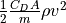
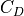
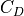

Dynamical Term¶
term <orbital-dynamics-term-name> ... end_term
- term … end_term¶
Specify a term to be added into the orbital dynamics. Each term will have its own set of input commands to control its contribution to the dynamics.
Available Dynamical Terms
Orbital Dynamics Terms¶
Earth Monopole¶
term earth_monopole wgs84 egm96 gravitational_parameter <real-value> end_term
This term represents the standard Keplerian two-body gravitational field of the Earth. Users can specify the gravitational parameter with one of the following commands. If no selection is made the EGM96 value will be used.
- wgs84¶
Use the WGS84 gravitational parameter.
- egm96¶
Use the EGM96 gravitational parameter. This is selected by default.
- gravitational_parameter <real-value>¶
Specify the gravitational parameter in SI units.
Earth J2 Perturbation¶
term earth_j2 wgs84 egm96 gravitational_parameter <real-value> j2 <real-value> mean_radius <length-value> end_term
This term represents the perturbation due to the oblateness of the Earth. Users can specify the gravitational parameter, the strength of the J2 term, and the mean radius, though each of these has a sensible default value.
- wgs84¶
Use the WGS84 gravitational parameter.
- egm96¶
Use the EGM96 gravitational parameter. This is selected by default.
- gravitational_parameter <real-value>¶
Specify the gravitational parameter in SI units.
- j2 <real-value>¶
Specify the strength of the J2 perturbation. The default value is 0.0010826267 (see Vallado, Fundamentals of Astrodynamics and Applications, 4th Edition).
- mean_radius <length-value>¶
Specify the mean radius of the Earth in meters. The default value is 6371 km.
Moon Monopole¶
term moon_monopole gravitational_parameter <real-value> interpolation_interval <time-value> end_term
This term represents the monopole gravitational field of the Moon. Computing the position of the Moon can be costly, so this dynamical term uses interpolation to reduce the frequency of lunar position queries. The cubic interpolation uses four locations with an equal time interval between them.
- gravitational_parameter <real-value>¶
Specify the gravitational parameter in SI units. The default value is 4.9028e12.
- interpolation_interval <time-value>¶
Specify the interpolation interval for the Moon’s position. Set this to 0.0 to turn off interpolation. The default value is 600 seconds.
Sun Monopole¶
term sun_monopole gravitational_parameter <real-value> end_term
This term represents the monopole gravitational field of the Sun.
- gravitational_parameter <real-value>¶
Specify the gravitational parameter in SI units. The default value is 1.32712440018e20.
Jupiter Monopole¶
term jupiter_monopole gravitational_parameter <real-value> end_term
This term represents the monopole gravitational field of Jupiter.
- gravitational_parameter <real-value>¶
Specify the gravitational parameter in SI units. The default value is 1.267127678e17.
Atmospheric Drag¶
term atmospheric_drag cross_sectional_area <area-value> drag_coefficient <real-value> atmosphere_model <atmosphere-model-name> end_term
This term represents drag on the platform because of the atmosphere of the
Earth. The applied acceleration is in the direction opposite to the direction
of the motion of the platform through the atmosphere, and has a magnitude
equal to , where  is the
density of the atmosphere at the location of the platform, is the
speed of the platform through the atmosphere,
is the
density of the atmosphere at the location of the platform, is the
speed of the platform through the atmosphere,  is the mass of the
platform,
is the mass of the
platform,  is the cross-sectional area of the platform, and 
is the drag coefficient of the platform.
is the cross-sectional area of the platform, and 
is the drag coefficient of the platform.
- cross_sectional_area <area-value>¶
Specify the cross-sectional area to use when computing the drag.
- drag_coefficient <real-value>¶
Specify the drag coefficient to use when computing the drag.
- atmosphere_model <atmosphere-model-name>¶
Specify the name of the atmosphere model that will be used by this drag term. For details on specifying atmosphere models for use with this term, please see Atmosphere Model.
Scripted¶
term scripted script <script-name> end_term
This term allows users to specify a dynamical effect on the platform using a script specified by the user.
- script <script-name>¶
Specify the script function defined in the global context that computes an acceleration. The script method provided should return a Vec3 with the computed acceleration. The script method will be provided the following arguments: the WsfIntegratingSpaceMover experiencing this dynamical term, the current mass of the platform, the time at which the script is called as a Calendar, the Vec3 ECI position of the platform, and the Vec3 ECI velocity of the platform.
Warning
Integrators call into the dynamics multiple times per step, and because there is overhead in calling into a script, this term will noticeably impact performance for the WSF_INTEGRATING_SPACE_MOVER.
For example, the following script would reproduce the effect of the Earth Monopole term:
script Vec3 ScriptedEarthMonopole(WsfIntegratingSpaceMover aMover, double aMass, Calendar aTime, Vec3 aPosition, Vec3 aVelocity) Vec3 acc = aPosition.Normal(); acc.Scale(-Earth.GRAVITATIONAL_PARAMETER() / aPosition.MagnitudeSquared()); return acc; end_script